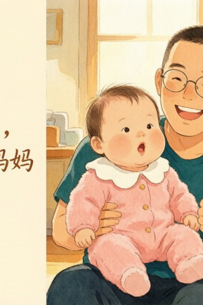
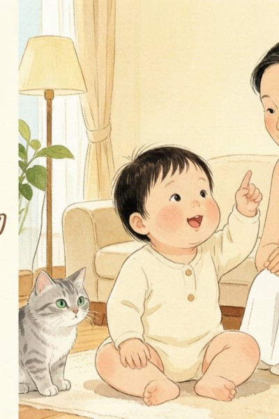
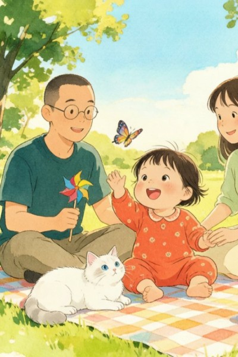
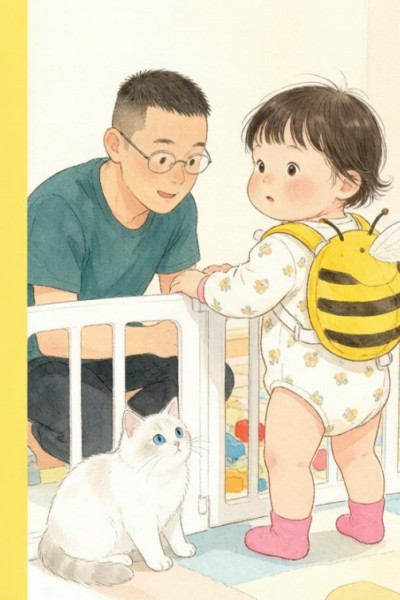
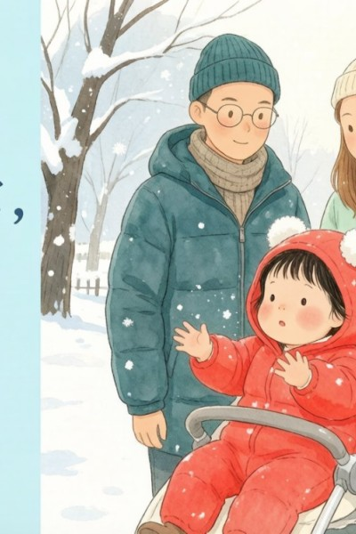
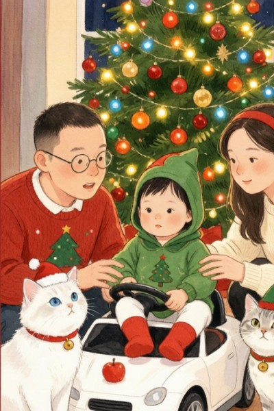
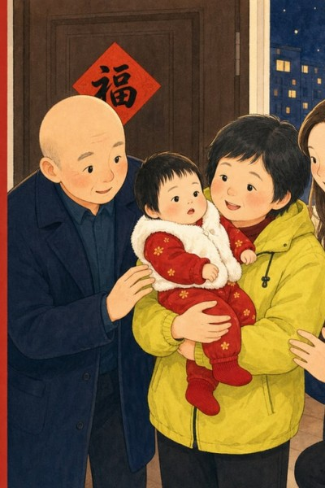
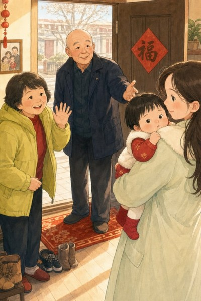
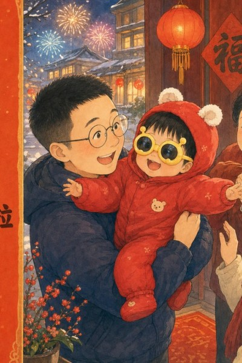
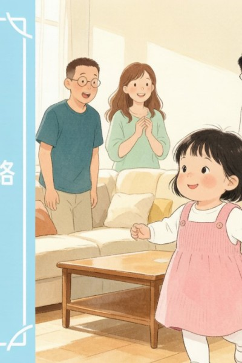

FOR YIYI · HER FIRST YEAR
给女儿的绘本。
做了十年儿童动画编剧，写过很多别人的故事。女儿一一出生那天，我把主角换成了她。
31 本 · 持续更新
从出生画起，跟着她长
文 · 图 都是爸爸
每本都从一件真实的小事开始
为什么要画这些
不是为了攒作品。是有些事，只发生一次。
第一次，只有一次
第一次笑、第一次翻身、第一次叫「爸爸」——都只发生一次。当时不记下来，以后就只能听别人转述。
照片会沉底，故事会被翻开
手机里存了几千张照片，真正翻回去看的没几张。做成书就不一样了——故事会被一遍一遍地讲，一遍一遍地读。
小事才是大事
深夜的肠胀气、第一口米粉、理发时的哭——当时觉得熬人，回头看，全是舍不得。
卷一 · 一一的第一年
出生顺序就是成长顺序。这 31 本，从春天出生，画到她自己迈出第一步——而这只是开头。
第一章
春天，她来了
从出生到满月：有第一次笑，也有深夜的哭。
第二章
一天一个样
翻身、理发、长牙、百天宴，还有第一次出远门。
第三章
用嘴和手认识世界
第一口米粉、第一次独坐，爬起来，也开始认生。
第四章
站起来，走出去
叫出「爸爸妈妈」，见过雪和春节，然后迈出第一步。

22 · 9-10 月
喊喊喊，叫出爸爸妈妈

23 · 10-11 月
指指指，一一会指物

24 · 11 月
玩玩玩，公园露营日

25 · 12 月
站站站，一一站起来

26 · 13 月
雪雪雪，一一见下雪

27 · 13-14 月
叮叮铛，圣诞到

28 · 春节
咚咚锵，一一过大年

29 · 春节
抱抱抱，一一拜大年

30 · 春节
亮亮亮，一一回家啦

31 · 14 月
走走走，一一会走路
卷二 · 在路上
一一还在长大，新的第一次还在发生。
会走路之后的故事，正在一本一本画出来——这一页会一直更新。
这些书真正的读者，是二十年后的一一。
那时她不会记得第一口米粉的味道，也不会记得第一次见雪时的表情。
但书记得。
你不记得的那一年，爸爸替你记着。